Interiér
Klasik od 990 Kč · Premium od 3 190 Kč
- Kompletní suché vysání
- Očištění a oživení plastů
- Tepování textilních sedaček a koberců
- Čištění a impregnace kůže
- Parní čištění, větrací otvory, mezidveřní prostory
Rudíkov · okres Třebíč · celá ČR
Patnáct let jsme se pohybovali kolem aut — kupovali je, prodávali a viděli, co s vozem udělá péče a co zanedbání. Dnes to děláme naplno ve vlastním studiu na Vysočině: interiér, lak i ochrana, která vydrží roky.
Tažením do stran otočíte vůz Tažením nahoru a dolů vůz umyjete
Co děláme
Čtyři oblasti, které se dají objednat samostatně nebo poskládat do balíčku. U každé platí to samé — vůz odjíždí v lepším stavu, než v jakém přijel.
Klasik od 990 Kč · Premium od 3 190 Kč
Klasik 990 Kč · Premium 1 990 Kč
1-krokové od 5 990 Kč · 2-krokové od 9 990 Kč
Roční 4 990 Kč · 3letá 6 990 Kč
Tři stupně péče
Od rychlé přípravy vozu na prodej až po kompletní obnovu s tříletou keramikou. Každý vyšší stupeň obsahuje všechno z toho nižšího.
Stupeň 1
7 490 Kč
Stupeň 2
14 990 Kč
Stupeň 3
18 990 Kč
Kompletní přehled
Kompletní ceník služeb. U položek označených „od“ a u cenových rozpětí záleží konečná částka na velikosti a stavu vozu — potvrdíme ji při domluvě termínu.
Nevíte, co váš vůz potřebuje? Zavolejte na 728 420 689 nebo napište na lunidetailing@seznam.cz — projdeme stav vozu a doporučíme rozsah.
Ukázka naší práce
Fotografie před a po z našich zakázek. Nejvíc je rozdíl vidět na sedačkách, v zavazadlovém prostoru a na laku v odrazu světla.
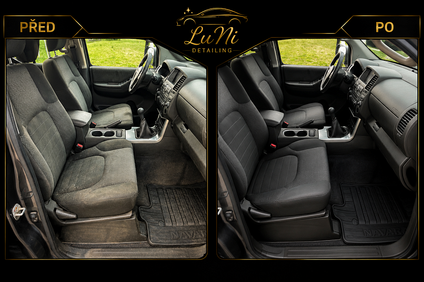
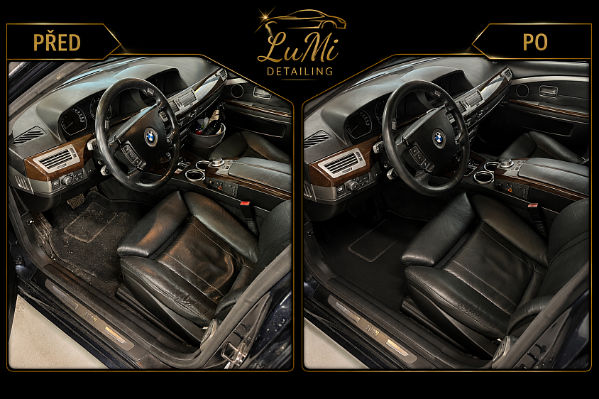
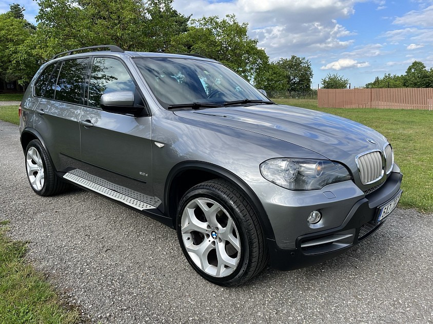
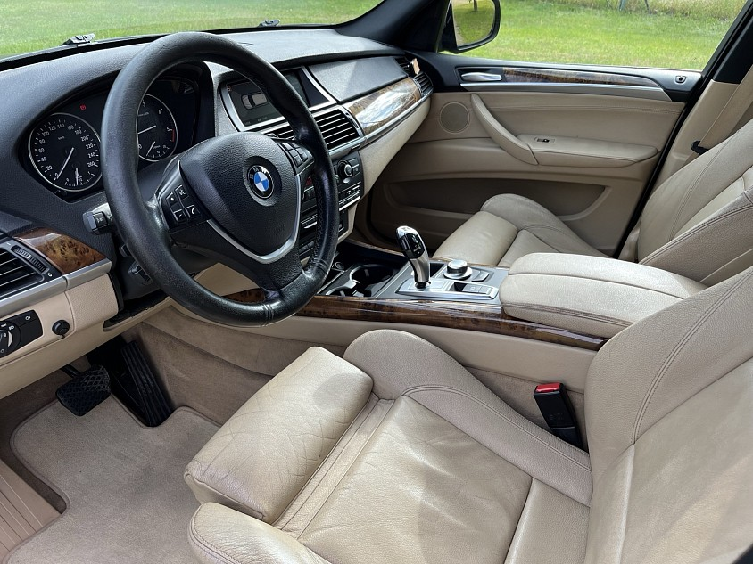
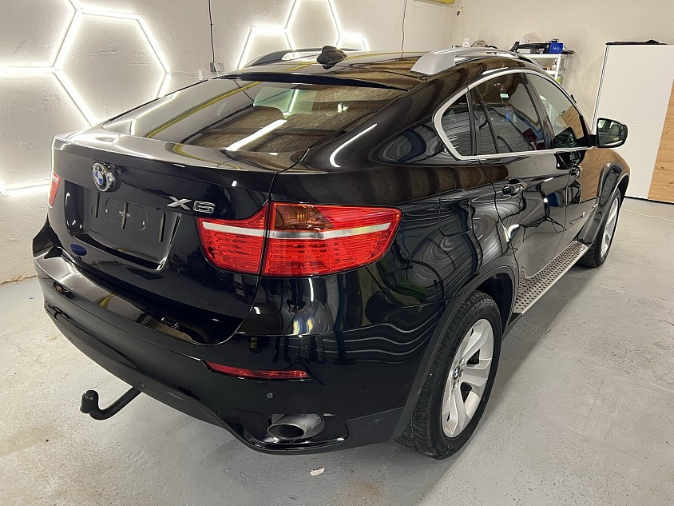
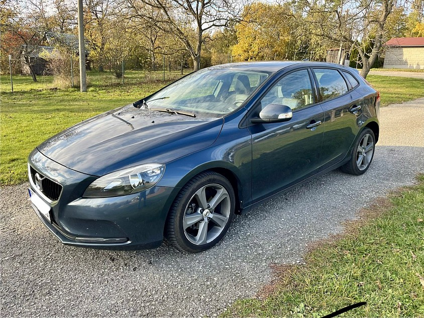
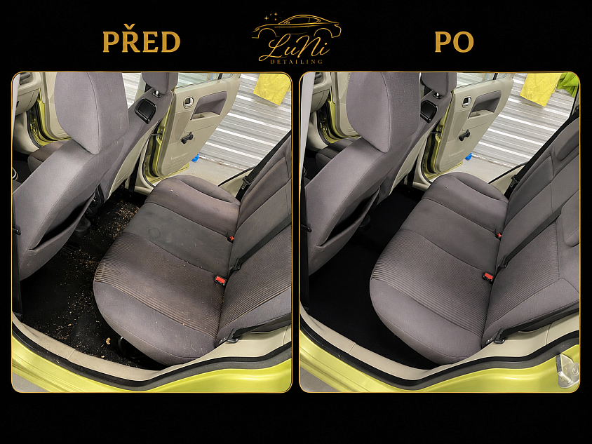
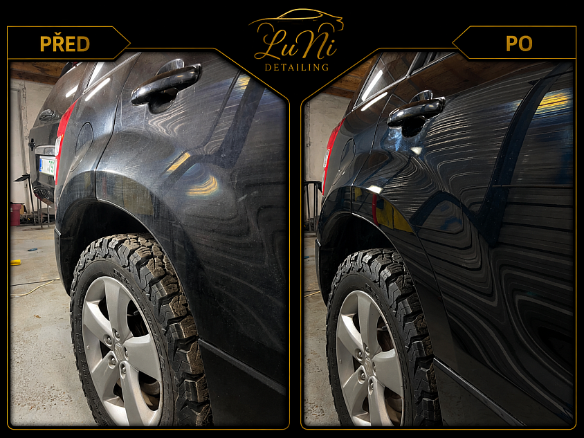
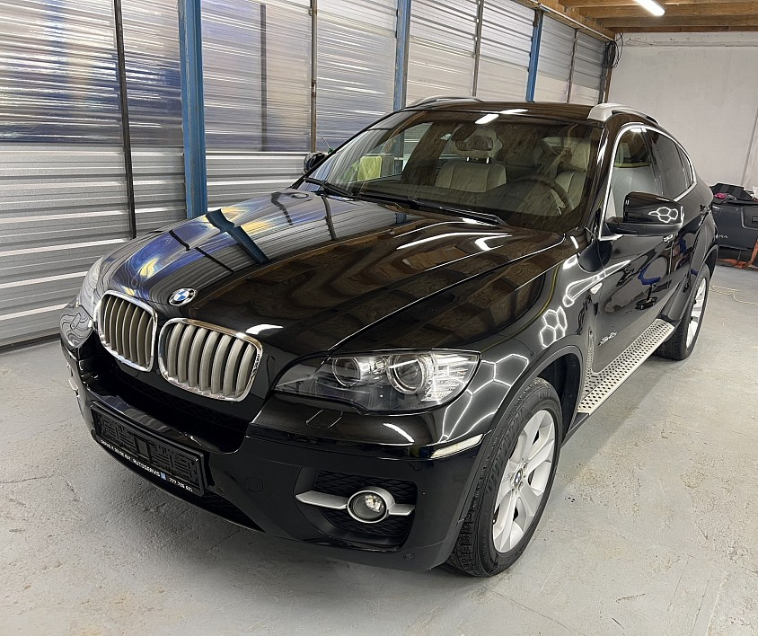
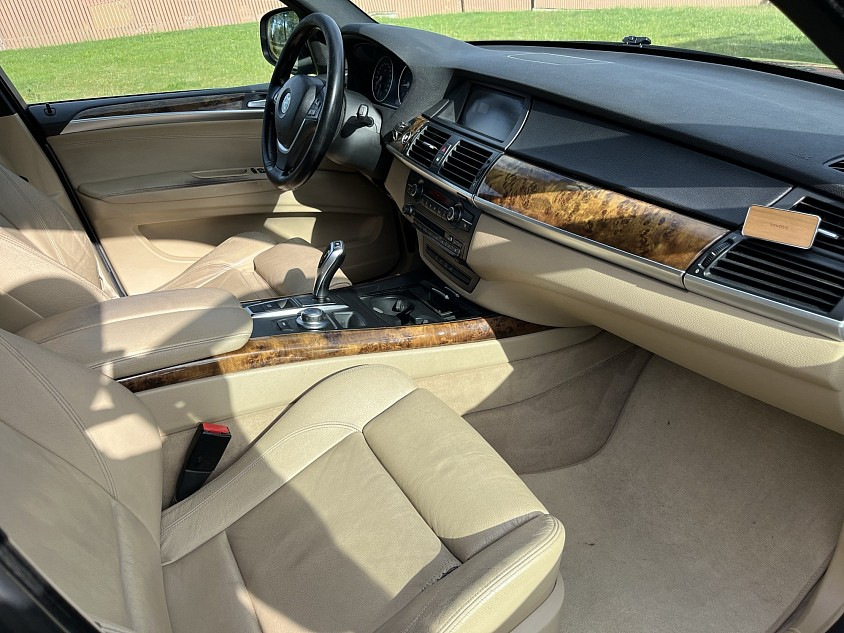
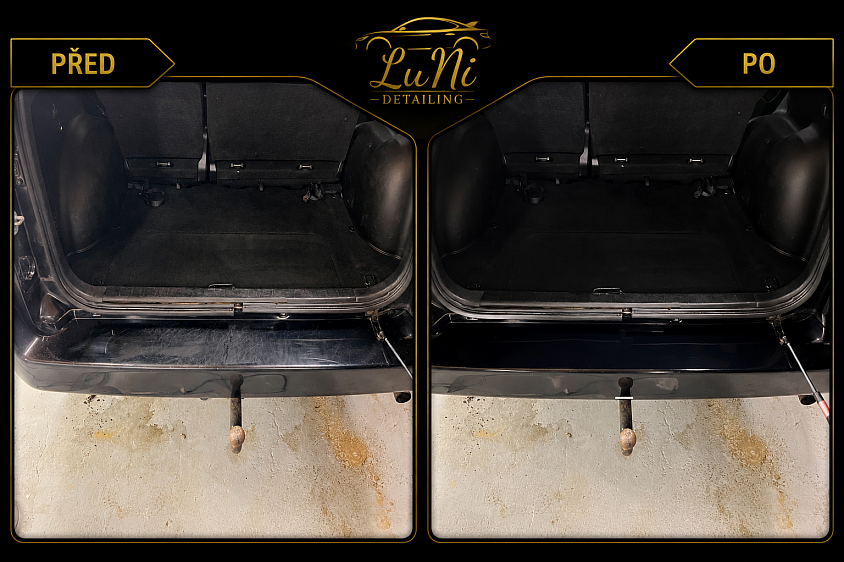
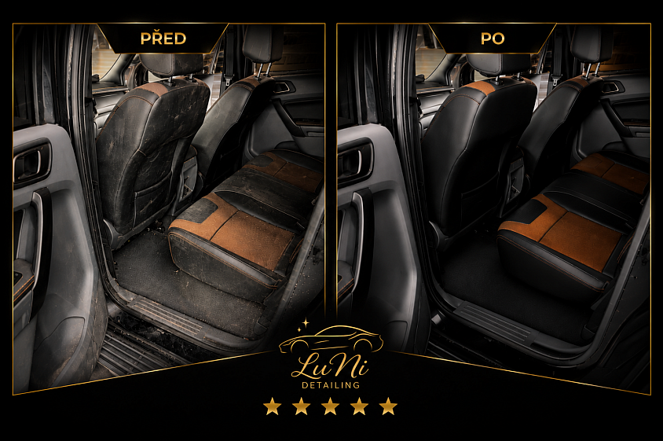
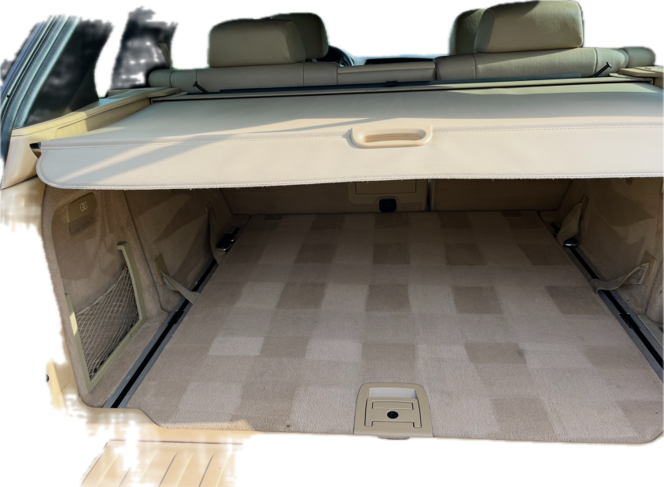
O nás
Před více než patnácti lety jsme začínali jen s pár penězi, ale s velkým odhodláním a vášní pro auta. Pohybovali jsme se ve světě nákupu a prodeje vozidel, kde jsme získávali zkušenosti, budovali kontakty a učili se, co zákazníci od kvalitní péče o vůz opravdu očekávají.
Právě dlouholetá praxe a cit pro detail nás dovedly k založení LuNi DETAILING. Spojujeme zkušenosti z automobilového prostředí s profesionální péčí o vozy — protože auto není jen dopravní prostředek, ale často i radost, vizitka a srdcová záležitost.
Používáme kvalitní profesionální přípravky, moderní technologie a především pečlivý přístup. Naším cílem je, aby každý zákazník odjížděl s pocitem, že jeho vůz vypadá lépe než kdy dříve.
Dokonalá čistota.
Luxusní péče o váš vůz.
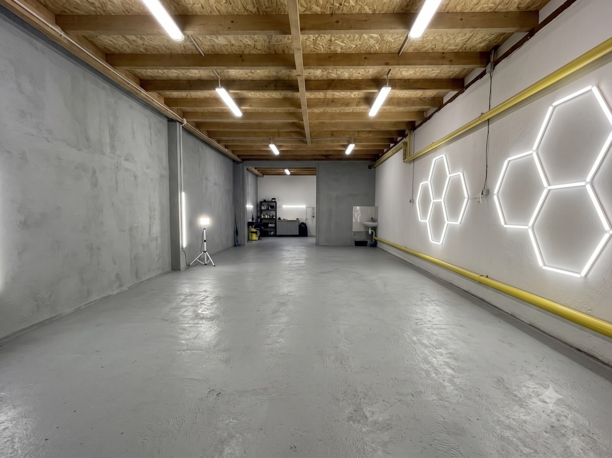
Detail rozhoduje. Každému vozu věnujeme maximální pozornost.
Používáme ověřené profesionální produkty a moderní postupy.
Dodržujeme domluvené termíny a vždy jednáme férově.
Každé auto i zákazník je jiný — péči přizpůsobujeme konkrétním potřebám.
Kde nás najdete
Působíme z Vysočiny a věnujeme se klientům z celé České republiky. Termín domluvíme telefonicky, přes WhatsApp nebo e-mailem — řekneme si, co vůz potřebuje, a rovnou potvrdíme, kdy ho můžete přivézt.